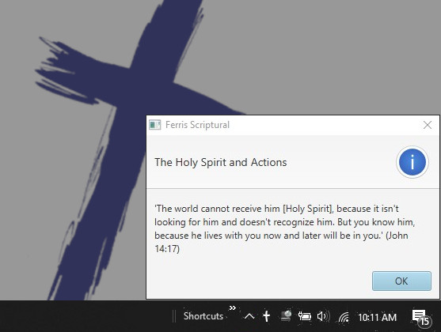

Ferris Scriptural
Scriptural is A Scripturee Alert system.
Download ferris-scriptural-tray to get started.
Scriptural run as a Windows system tray icon. At an interval of your choosing, it will randomly pick one of the scriptures you've configured and display it. Use this time to meditate on God. Review the scripture and allow The Spirit to change your heart.

Modules
ferris-scriptural-tray is a 100% pure Java stand-alone and self-contained Windows tray application. It comes with its own JRE, so just download and run.
Only 3 simple steps to get up and running:
- Download and unzip
- Configure your scriptures
- Schedule the time interval for the alert to display
ferris-scriptural-verses contains some example verse configuration files. The good part about them being part of the project is that Scriptural can access them through their GitHub URL.